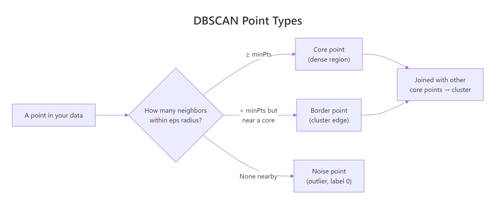
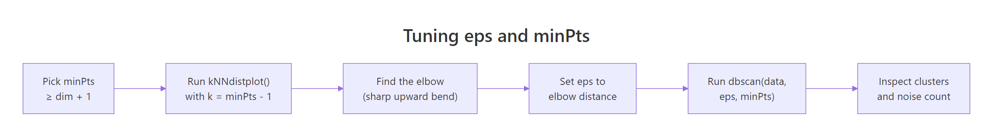

DBSCAN Clustering in R: Density-Based Clustering for Non-Convex Shapes
DBSCAN groups dense regions of points into clusters of any shape and labels everything sparse as noise, so you do not have to pick the cluster count k upfront. This tutorial uses the dbscan package in R to fit DBSCAN on non-convex data, tune eps and minPts, and read the noise points correctly.
Why does DBSCAN beat k-Means on non-convex shapes?
k-Means draws round, balanced clusters, so it falls apart on rings, moons, or any group that is long and curvy. DBSCAN looks at density instead: where points are packed close together, they belong to the same cluster, and where the data thins out, those points get flagged as noise. Let's see this difference on multishapes, a small demo dataset whose groups are deliberately non-spherical.
DBSCAN found five clusters and tagged 31 points as noise, with no k specified anywhere. The same data given to kmeans(shapes, centers = 5) would slice the moons in half because k-Means insists on convex, equal-spread groups. DBSCAN follows the dense trail instead.
scale() first if your columns are on different scales.Try it: Run DBSCAN on the four numeric columns of iris with eps = 0.5 and minPts = 5. Print the result to see how many clusters and noise points it finds.
Click to reveal solution
Explanation: DBSCAN merges versicolor and virginica into one cluster because they overlap in petal/sepal space at this eps. Tightening eps would split them at the cost of more noise.
How does DBSCAN classify each point as core, border, or noise?
DBSCAN gives every point one of three roles. A core point has at least minPts neighbors within distance eps. A border point sits inside the eps-neighborhood of a core point but does not itself have enough neighbors to be core. Anything else is noise and gets cluster label 0.

Figure 1: DBSCAN classifies every point as core, border, or noise based on its eps-neighborhood.
The result object stores the cluster label for each row and exposes a helper for the core/border split, so you can inspect the breakdown directly.
Most points are core, a small ring of border points hugs the edges of each cluster, and 31 noise points are scattered outside any dense region. The cluster numbers themselves are arbitrary identifiers, the only special label is 0 for noise.
Try it: Use table(db$cluster) to compute how many points sit in cluster 1 alone. Save it to ex_counts.
Click to reveal solution
Explanation: A logical comparison gives TRUE/FALSE, and sum() treats those as 1/0, giving you the count in one line.
How do you choose eps with kNNdistplot()?
The whole tutorial used eps = 0.15 without explanation. Here is how that number is picked. The dbscan package ships a helper, kNNdistplot(), that plots the distance from every point to its k-th nearest neighbor, sorted from smallest to largest. Where the curve bends sharply upward, you have crossed the boundary between dense (cluster) and sparse (noise) regions, that is a good eps.
The standard rule for minPts is "data dimensionality plus 1", with a minimum of 3. Once minPts is fixed, plot the k-NN distance with k = minPts - 1.

Figure 2: The tuning workflow: choose minPts, then read eps off the kNN-distance elbow.
The y-axis is the distance to the 4th nearest neighbor for each point. Up to about y = 0.15, the curve is almost flat, those are core-region points whose neighbors are nearby. Past 0.15 it bends sharply upward, meaning the next handful of points are far from anything else, exactly the noise we want excluded. Reading the elbow off the dashed line gives eps = 0.15.
dbscan() returns 0 noise and 1 cluster, drop eps. If it returns 90% noise, raise eps or lower minPts.Try it: Increase minPts to 10, plot kNNdistplot(shapes, k = 9), and visually estimate the new elbow. Save your read-off as ex_kdist.
Click to reveal solution
Explanation: A higher minPts requires more neighbors to qualify as core, so the elbow shifts to a slightly larger distance. Around 0.18 is a reasonable read for k = 9 here.
What does the noise label actually mean and should you keep it?
Noise points are not always errors. DBSCAN labels a point as noise when it sits in a sparse region under the current eps. That covers genuine outliers (bad sensor reads, fraud), but it also covers small real groups that happen to be less dense than the bulk. Looking at where the noise lands tells you which case you are in.
The grey points sit between clusters and on the outer fringe of each ring, exactly where you would expect "transition zone" data. Some are likely genuine outliers, others are points the current eps could not reach. Before throwing them out, retune eps and see if the count drops, if it does, those points were just under-included, not anomalies.
eps, retune before discarding. Doubling eps from 0.15 to 0.30 typically cuts the noise count by half or more. Use noise count as a tuning signal, not a hard verdict on each row.Try it: Filter the noise rows out of multishapes using db$cluster == 0 and report how many rows result. Save the filtered data frame to ex_noise.
Click to reveal solution
Explanation: Logical subsetting with db$cluster == 0 picks the rows DBSCAN flagged as noise, matching the count printed by db.
When does DBSCAN fail and what is HDBSCAN?
DBSCAN's weak spot is varying density. A single eps cannot fit both a tight cluster and a loose one in the same dataset, you either over-merge the loose one or fragment the tight one. HDBSCAN ("hierarchical DBSCAN") fixes this by considering many eps values at once and extracting the most stable clusters across that hierarchy. There is no eps to tune, only minPts.
HDBSCAN finds the same five shapes but with slightly fewer noise points, because it can pick a tighter density threshold for each cluster individually. On uniform-density data like multishapes, the two algorithms agree closely, but on real datasets where some clusters are dense and others diffuse, HDBSCAN usually wins.
eps with a density hierarchy, so you only tune minPts. This makes it the safer default when you do not know whether your clusters share a density. Reach for plain DBSCAN when you want a fast, deterministic baseline you can fully explain.Try it: Refit HDBSCAN on shapes with minPts = 15 and report how many clusters it returns. Save the model to ex_hdb.
Click to reveal solution
Explanation: Higher minPts makes each cluster require more support before it counts, often reducing cluster count and raising noise. Here the five real shapes still survive.
Practice Exercises
Exercise 1: Fit DBSCAN on iris with a tuned eps
Scale the four numeric columns of iris, use kNNdistplot() with k = 4 to read an elbow, fit DBSCAN with that eps and minPts = 5, and report the cluster + noise counts. Save the model to my_db.
Click to reveal solution
Explanation: After scaling, the elbow sits near 0.7. DBSCAN finds 2 clusters (one is setosa, the other merges versicolor and virginica) and flags 32 transition points as noise.
Exercise 2: Sweep eps to find the cleanest split on multishapes
Try eps values c(0.10, 0.15, 0.20, 0.30) at minPts = 5 on shapes. For each value, record the cluster count and the noise count in a data frame called my_sweep. Identify the eps that gives roughly 5 clusters with the smallest noise count.
Click to reveal solution
Explanation: Tiny eps over-fragments and labels too much as noise, large eps collapses everything into a single blob. eps = 0.20 gives 5 clusters with only 11 noise points, the cleanest split for this data.
Complete Example
The end-to-end DBSCAN workflow on multishapes, in one narrative.
Read the output bottom-up: HDBSCAN gave the safety check, the visualization confirmed the five non-convex shapes, and the noise count of 31 (out of 1100) is small enough to trust the rest of the cluster assignments. This is the workflow you can drop on any new numeric dataset.
Summary
| Property | k-Means | DBSCAN | HDBSCAN |
|---|---|---|---|
| Need to specify k | Yes | No | No |
| Cluster shape | Convex only | Any (density-based) | Any (density-based) |
| Detects outliers | No | Yes (label 0) |
Yes (label 0) |
| Tunable parameters | centers |
eps, minPts |
minPts |
| Handles varying density | Poorly | Poorly (single eps) |
Well |
| Speed (n = 10k) | Fastest | Fast | Slower |
Use DBSCAN when your clusters are non-convex and roughly the same density. Use HDBSCAN when densities differ. Reach for k-Means only when you already know k and your clusters are convex blobs.
References
- Hahsler, M., Piekenbrock, M., & Doran, D. (2019). dbscan: Fast Density-Based Clustering with R. Journal of Statistical Software, 91(1). Link
- Ester, M., Kriegel, H.-P., Sander, J., & Xu, X. (1996). A Density-Based Algorithm for Discovering Clusters in Large Spatial Databases with Noise. KDD-96. Link
- dbscan package on CRAN. Link
- Hahsler, M. dbscan vignette: Fast Density-based Clustering with R. Link
- Campello, R. J. G. B., Moulavi, D., & Sander, J. (2013). Density-Based Clustering Based on Hierarchical Density Estimates (HDBSCAN). PAKDD. Link
- Datanovia. DBSCAN: Density-Based Clustering Essentials. Link
- STHDA. DBSCAN: density-based clustering for discovering clusters with noise. Link
Continue Learning
- Clustering in R: k-Means vs Hierarchical vs DBSCAN, the parent guide that compares all three algorithms side by side on the same data.
- PCA in R, reduce high-dimensional data to 2 or 3 components first, then cluster, especially useful when DBSCAN's distance computation slows down.
- Interpreting PCA Results in R, make sense of the components you feed into DBSCAN, so the resulting clusters have a story.